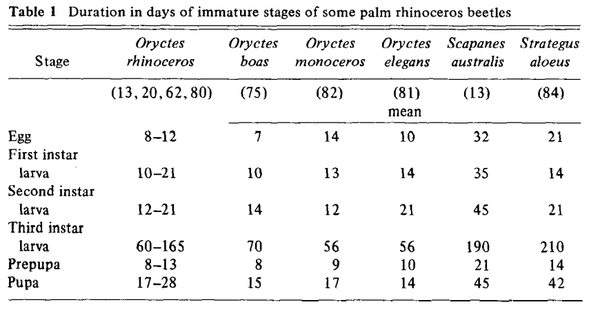

https://www.simonlindgren.com/notes/2019/11/15/setup-for-writing-in-markdown-citing-with-zotero-and-publishing-with-pandoc
Bedford 1980 [@bedford_biology_1980]

Pallipparambil 2015 [@pallipparambil_new_2015] >A lab study by Indiravathi (2001) reported that approximately 63 % of eggs and 87% of larvae successfully developed into adults.
Gressitt 1953 [@gressitt_coconut_1953] > “The total life span in Palau may range from 150 to about 270 days, and I assume the average under normal conditions to be about 200 days. The pre-incubation period is about 12 to 20 days. The period from the of an egg to first egg of the next generation may be as little as 115 days. Thus, given favorable conditions, more than 3 genertions my develop in one year.”
Pallipparambil 2015 [@pallipparambil_new_2015] >Unfavorable environmental conditions reduces larval size and prolongs development up to 420 d (Catley, 1969).
Gressitt 1953 [@gressitt_coconut_1953] >“A female lays 70 to more than 100 eggs in its lifetime. Taking 90 as the average number of eggs laid by one female and assuming the sex ratio to be one female to one male, with an average life-cycle of 4 months to middle of egg-layng period for each female), the theoreticalfigure of 186,390 progeny per originalfemale during one year (16,995,293,890 by the end of two years) is obtained.”
Gressitt 1953 [@gressitt_coconut_1953] >“Of 282 specimens examined from Palau and Samoa, 142 were males and 140 were females. This suggests a ratio of 1.014 males to one female.”
Pallipparambil 2015 [@pallipparambil_new_2015] >The beetle is thought to prefer short flights, but is capable of long flights if local conditions are unfavorable (Catley, 1969). A lab study demonstrated that palm-fed tethered adult beetles had a flight potential of 2–3 h, covering the equivalent of 2–4 km (Hinckley, 1973). Reports of long distance flight by O. rhinoceros include adults flying toward light on a ship anchored 700 m from shore (Catley, 1969), marked adults recaptured at 900 m within 3 d and approximately 1600 m within a month (Cumber, 1957). Kamarudin and Wahid (2004) used mark-release-recapture studies to determine the flight range of O. rhinoceros in oil palm replanting regions in Malaysia; their results suggested that the adults moved at the rate of 10–23 m/day and up to 1.3 km/week.